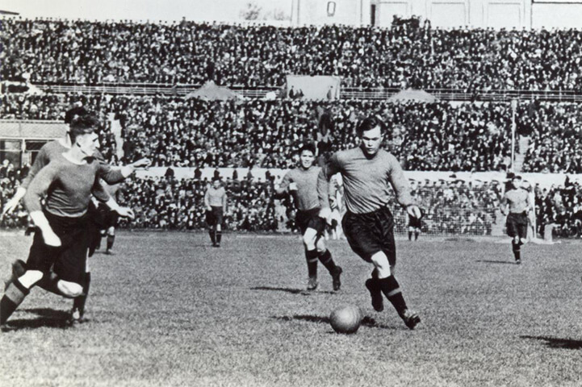
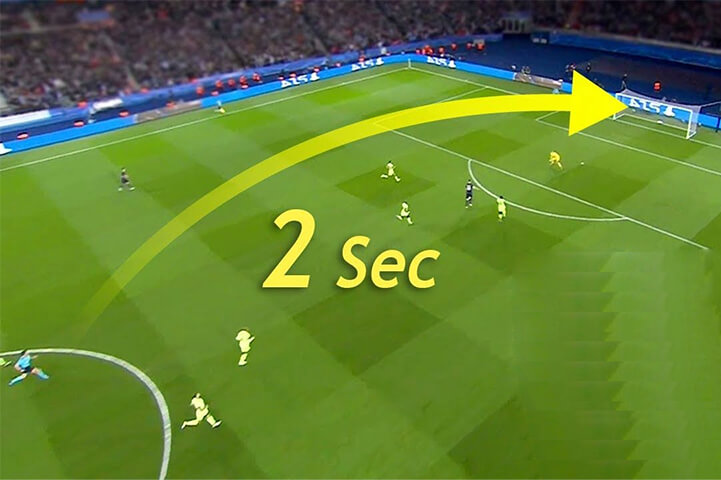
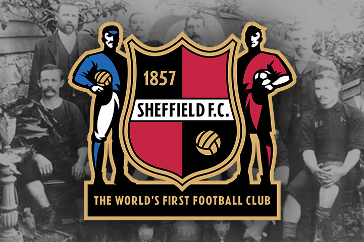
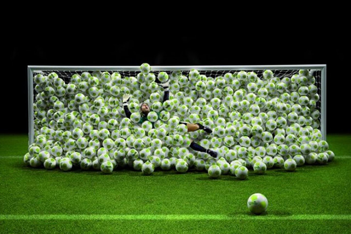
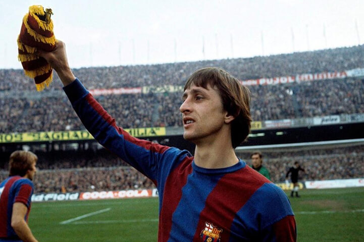
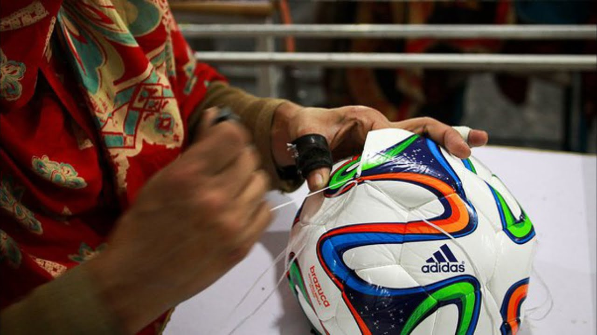
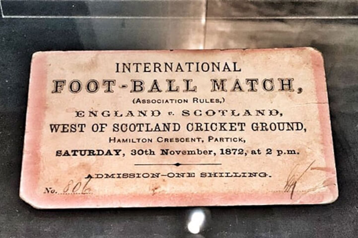

1. Football's Origins
What if we told you that the most popular sports in the world began in China, an Asian nation whose team is ranked 75th in the FIFA/Coca-Cola Men's World Ranking? It was claimed that football was created in China and was first known as Cuju around 476 BC.
2. Most Beloved Sport Globally
According to a poll done by the Federation Internationale de Football Association (FIFA) in 2001, 240 million (24 crore) individuals from all over the world play football regularly. The overall population of the world as of June 2018 was 7.5 billion, or 750 crore.

The global population in 2001 stood at 6.19 billion. That amounts is nearly 4% of the world's population. This is a crazy football fact, isn't it?
3. Most Viewed Sports Tournament Worldwide
The FIFA World Cup is the most viewed sporting event in the world. It is projected that 3.572 billion (357.2 crore) people watched the 2018 World Cup, which was held in Russia. This indicates that almost half of all people on earth watched the event.

What would be more intriguing is that the above figure would increase by 309.7 million from 30.9 crore if we included the audience who did not watch coverage at home but caught the action on digital platforms, in public viewing, and/or in bars and restaurants.
4. Quickest Goal in Football History
Argentinians are really good at scoring goals in football, and Lionel Messi is an example of that.But something amazing happened on December 26th, 1998, the day after Christmas.
A football player named Ricardo Olivera scored a goal in only 2.8 seconds, which is really fast! This broke the record set by an English player named Colin Cowperthwaite, who scored a goal in 3.5 seconds back in 1979.
5. Oldest Football Club
In a city called South Yorkshire, which is in England, there is a really old football club. It's called Sheffield Football Club or Sheffield F.C. and it's very special because it's the oldest football club in the world! It was started on October 24th, 1857, which means it's been around for 165 years now.
Sheffield FC now plays in the Northern Premier League Division One East.
6. Highest Number of Goals by a Single Player in an Official Match
Archie Thompson is the person who has the world record for scoring the most goals in an international soccer game. He scored 13 goals against American Samoa during a competition called the 2002 FIFA World Cup. Australia won the game 31-0.
7. Football Stars with Asteroids Named After Them
Guess what? Five asteroids have been named after football players! That's really amazing! Here are their names:
| Football Player | Asteroid Name |
|---|---|
| Arsene Wenger | 33179 Arsènewenger |
| Johan Cruyff | 14282 Cruyff |
| Josef Bican | 10634 Pepibican |
| Ferenc Puskas | 82656 Puskas |
| Michael Ballack | 79647 Ballack |

8. Birthplace of Modern Footballs
Do you know that almost two-thirds of all the footballs used in the world are made in Pakistan? This is a really interesting fact! People might think that big sports companies make their footballs in big, modern cities, but the truth is that they are made in Pakistan.
And even more surprising, 40% of the footballs made in Pakistan come from a small city called Sialkot. Sialkot is a small city with a population of 2 million people, but it is the biggest supplier of footballs in the world.
9. First International Football Match
The first official international football match that FIFA recognized was between England and Scotland on November 30th, 1872. Around 4,000 people came to watch, but the game ended in a tie with no one scoring any goals.
We celibrated the 150th anniversary of the first-ever international football match few months ago.
10. Europe's Football Dominance
The FIFA World Cup has been going on for 90 years now, and almost every time, a team from Europe has made it to the final. But there were two times when that didn't happen.
In 1930, the final was played between two teams from South America, Uruguay and Argentina. Uruguay won 4-2. The other time was in 1950, when the final was played between Uruguay and Brazil. Uruguay won 2-1, and this was their second World Cup win, but they haven't won it again since then.
Both Brazil and Uruguay are also South American countries.